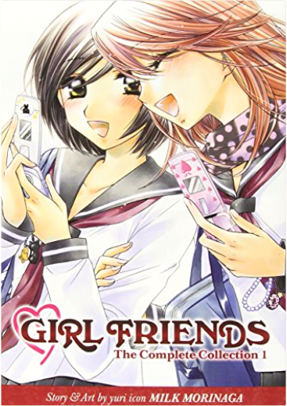
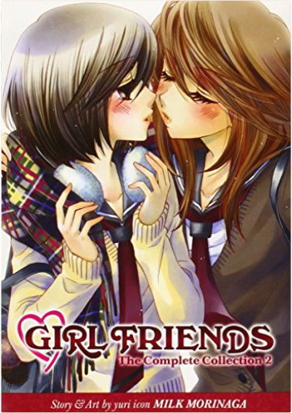
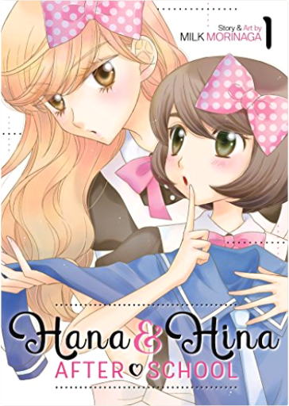
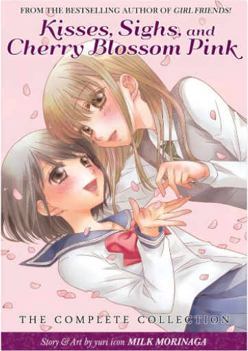
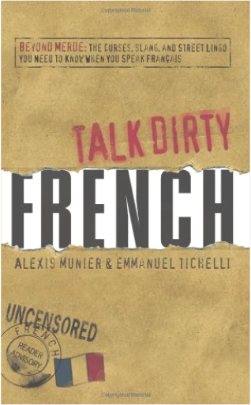
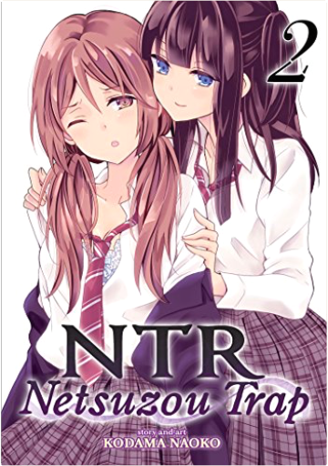
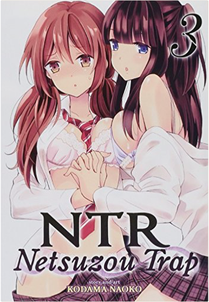
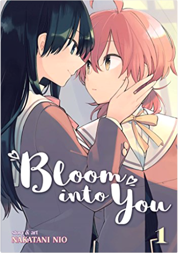

How to Be a WomanCaitlin Moran “Caitlin Moran is the profane, witty and wonky best friend I wish I had. She’s the feminist rock star we need right now.”
—Ayelet Waldman, author of Bad Mother
“Caitlin Moran is so fabulous, so funny, so freshly feminist. I don’t want to be like her—I want to be her.”
—Peggy Orenstein, author of Cinderella Ate My Daughter
Caitlin Moran puts a new face on feminism, cutting to the heart of women’s issues today with her irreverent, transcendent, and hilarious How to Be a Woman. “Half memoir, half polemic, and entirely necessary,” (Elle UK), Moran’s debut was an instant runaway bestseller in England as well as an Amazon UK Top Ten book of the year; still riding high on bestseller lists months after publication, it is a bona fide cultural phenomenon. Now poised to take American womanhood by storm, here is a book that Vanity Fair calls “the U.K. version of Tina Fey’s Bossypants….You will laugh out loud, wince, and—in my case—feel proud to be the same gender as the author.” Girl Friends: The Complete Collection 1Milk Morinaga For fans of Strawberry Panic comes a new tale of forbidden love in 496 pages
When it comes to grades, bookish high school student Mariko Kumakura is at the top of her class. Socially, however, she is shy and lonely, typically eating lunch by herself. Enter the charismatic and beautiful Akko Oohashi, whose goal is to befriend Mariko and burst her out of her introverted shell.
In the process of transforming Plain Jane Mariko into one of the cutest, most popular girls in school, deep feelings begin to emerge that suggest something deeper than friendship. Will these feelings destroy the budding relationship between Mariko and Akko, or will it turn into something else? Girl Friends: The Complete Collection 2Milk Morinaga Super-cute and popular high school girl Akko Oohashi has transformed her new friend Mariko in more ways than one. Not only has she inducted Mariko into a circle of new friends and helped her overcome her shyness and sense of isolation, but both girls have awakened feelings they never knew they had.
In the course of their evolving relationship, Akko and Mariko have struggled against every emotional hurdle one would expect from a burgeoning romance between high school girls. One big question remains: are they ready to face the world as a couple? Hana & Hina After School Vol. 1Milk Morinaga A brand new yuri series from the New York Times best selling manga creator Milk Morinaga!
Hana & Hina After School is an all-new series by Milk Morinaga, a beloved creator known for works in theyuri genre including Girlfriends and Gakuen Polizi. Hana & Hina After School is a romantic comedy about two dissimilar girls who find common ground when it comes to all things cute, including each other.
Hana and Hina are two high school girls working at the same shop, but they come from completely different worlds. Hana is petite, uncertain and shy, while Hina is tall, trendy and confident.
But they both can’t keep their eyes off things that are cute, be it the uniforms at Hana’s new school or Hana herself! Hana and Hina may have more than their shared part time jobs to keep a secret... Kisses, Sighs, and Cherry Blossoms Pink: The Complete CollectionMilk Morinaga From Milk Morinaga, the author of the New York Times bestselling manga Girl Friends!
When the cherry blossoms bloom it means the start of another school year—and for the girls at Sakuraki High, it signals the birth of new dreams, fears, and relationships. In “Even If We’re Not Friends,” Nana and Hitomi have been dear friends since childhood, but when Nana gets into the exclusive Sakuraki High while Hitomi doesn’t, their true feelings for each other emerge. In “The Summer Closest to Heaven,” Natsuka is a ghost who resides at the school, still in love with one of the former students who is now the school nurse. In “A Kiss, Love, and a Prince,” Narumi gets her first kiss from Tachiba in the school play, and is shocked at being kissed by a girl.
Fourteen stories of blossoming romance between girls are interspersed throughout this heartfelt and adorably illustrated manga collection. Talk Dirty French: Beyond Merde: The curses, slang, and street lingo you need to Know when you speak francaisAlexis Munier, Emmanuel Tichelli Let's be sérieux!
Can't quite come up with the right French quip or four-letter word? With Talk Dirty: French, you'll be able to put your (middle) finger on it. Each entry provides an individual foreign gem, a useful French sentence employing the word, the expression's English counterpart, and its literal translation.
Whether you're a native-speaker, world traveler, or just looking to tell off those brash Parisians, these naughty words and risqué slang will surely give your tongue a French twist.
Les couilles: the balls
French Expression: Je l'ai avertie-elle ne m'a pas écoute alors maintenant je m'en bats les couilles.
Translation: I warned her—she didn't listen to me so now I'm washing my hands of it.
Literal Translation: I warned her—she didn't listen to me so now I'm flapping my balls of it. Reading Lolita in Tehran: A Memoir in BooksAzar Nafisi Every Thursday morning for two years in the Islamic Republic of Iran, Azar Nafisi, a bold and inspired teacher, secretly gathered seven of her most committed female students to read forbidden Western classics. Some came from conservative and religious families, others were progressive and secular; some had spent time in jail. They were shy and uncomfortable at first, unaccustomed to being asked to speak their minds, but soon they removed their veils and began to speak more freely–their stories intertwining with the novels they were reading by Jane Austen, F. Scott Fitzgerald, Henry James, and Vladimir Nabokov. As Islamic morality squads staged arbitrary raids in Tehran, as fundamentalists seized hold of the universities and a blind censor stifled artistic expression, the women in Nafisi’s living room spoke not only of the books they were reading but also about themselves, their dreams and disappointments.
Azar Nafisi’s luminous masterwork gives us a rare glimpse, from the inside, of women’s lives in revolutionary Iran. Reading Lolita in Tehran is a work of great passion and poetic beauty, a remarkable exploration of resilience in the face of tyranny, and a celebration of the liberating power of literature. NTR - Netsuzou Trap Vol. 1Kodama Naoko NTR - Netsuzou Trap is a dramatic tale of romance, lust, and betrayal, as two young woman explore their growing feelings for one another.
Yuma and Hotaru have been friends since childhood. It is only natural that when Yuma is nervous about her new boyfriend, she asks Hotaru along with her boyfriend for a double date. But when Hotaru offers herself to Yuma as “practice,” both girls realize that they’re more interested in each other than they are in their own boyfriends.
With boyfriends in the foreground but a secret, passionate tryst in the background, will Yuma and Hotaru try to forget what happened between them or have they fallen into a trap of true love and betrayal? NTR - Netsuzou Trap Vol. 2Kodama Naoko NTR - Netsuzou Trap is a dramatic tale of romance, lust, and betrayal, as two young woman explore their growing feelings for one another. With stunning artwork and a romantic storyline that oozes with erotic tension, NTR - Netsuzou Trap is a highly-anticipated title among yuri manga fans.
Yuma and Hotaru have been friends since childhood. It is only natural that when Yuma is nervous about her new boyfriend, she asks Hotaru along with her boyfriend for a double date. But when Hotaru offers herself to Yuma as “practice,” both girls realize that they’re more interested in each other than they are in their own boyfriends.
With boyfriends in the foreground but a secret, passionate tryst in the background, will Yuma and Hotaru try to forget what happened between them or have they fallen into a trap of true love and betrayal? NTR - Netsuzou Trap Vol. 3Kodama Naoko After she and Takeda break up, Yuma's life gets more complicated when Fujiwara takes an intimate photograph of her and Hotaru, and then Hotaru reveals a secret she's been hiding from Yuma. Bloom into You Vol. 1Nakatani Nio I THINK I MIGHT BE FALLING IN LOVE WITH YOU…
Yuu has always adored shoujo manga and yearns for the day when someone might give her a love confession that would send her heart aflutter. Yet when a junior high school classmate confesses his feelings to her–she feels nothing. Disappointed and confused, Yuu enters high school, where she sees the confident and beautiful student council member Nanami. When the next person to confess to Yuu is Nanami herself, has her romantic dream finally come true? |

 Made with Delicious Library
Made with Delicious Library